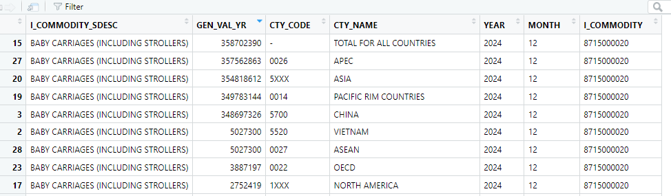

library(httr)
library(jsonlite)
l0 <- "https://api.census.gov/data/timeseries/intltrade/"
l1 <- "imports"
l2 <- "hs"
l3 <- "I_COMMODITY_SDESC,GEN_VAL_YR,CTY_CODE,CTY_NAME"
l4 <- "YEAR=2024&MONTH=12&I_COMMODITY=8715000020"
api_call <- paste0(l0,l1,"/",l2,"?get=",l3,"&",l4)
res <- GET(api_call)
predf <- fromJSON(rawToChar(res$content) )
df <- as.data.frame(predf[2:nrow(predf),])
names(df) <- predf[1,]
df$GEN_VAL_YR <- as.numeric(df$GEN_VAL_YR)
View(df)Introduction to Census trade data API”
CPI
api calls to the US census to extract trade data
Census Bureau
The landing page for trade data is https://www.census.gov/foreign-trade/index.html. A good starting point for learning how to use the API is the pdf International Trade Data API User Guide
You only need a Census Bureau API key if you will submit more than 500 API calls a day.
There are five components to each API query:
- level 0: the base URL <“http://api.census.gov/data/timeseries/intltrade/”>
- level 1: The choice of imports or exports
- level 2: the endpoint (commodity classification)
- level 3: the variables to download
- level 4: the clauses of the query
The nine endpoints are listed below along with their abbreviation for use in the query:
- hs: harmonized system
- statehs: harmonized system by state
- porths: harmonized system by port
- naics: North American Industry Classification System (NAICS )
- enduse: the end-use classification system that is used for the monthly FT900 trade report
- sitc: Standard International Trade Classification System SITC
- hitech: Advanced Technology
- usda: U.S. Department of Agriculture
Appendixes A and B of the pdf list the variables that can be downloaded for exports and imports, respectively. However, there are some differences in the available variables for exports and imports so it is better to use the list of variables that is associated with each endpoint. The urls have the following format
https://api.census.gov/data/timeseries/intltrade/[exports/imports]/[endpoint]/variables.html
For example, if you are downloading export data from the hs endpoint the url is
https://api.census.gov/data/timeseries/intltrade/exports/hs/variables.html
and if you are downloading import data from the enduse endpoint the url is
https://api.census.gov/data/timeseries/intltrade/imports/enduse/variables.html
The key variables can be categorized as follows and are separated by a comma in the api call.
- commodity code, commodity short and long description
- monthly and year-to-date value of exports/imports
- monthly and year-to-date quantity of exports/imports
- country name and country code of origin or destination
- shipping type, e.g. air, container, etc.
- port and district of origin or destination
The clauses of the query usually involve the selection of a date, time series, country, port, state or product type.
- specific year and month: time=2013-03 or YEAR=2013&MONTH=03
- time series: time=from+2013-01+to+2013-11
- country name: CTY NAME = Mexico
- country code: CTY CODE=2010 (2010 is the country code for Mexico)
- product type: I_COMMODITY=9504500000 is the clause for selecting imports of video games
The clauses of the query are separated by an ampersand, i.e. the query for imported video games from mexico for March 2013 would like:
YEAR=2013&MONTH=03&CTY_ NAME=MEXICO&I_COMMODITY=9504500000
Note
- country codes can be obtained from the Geographic Code section of the reference page.
- the most comprehensive page for product codes is the concordance of the reference page. The concordance contains each product type and is listed for all of the endpoints.
- Take note that you should select the concordance for the appropriate year AND that imports and exports each have their own concordance.
- There is a separate file that lists the structure of the concordance
- there is an html page schedule B 2025 that provides more information about all of the schedule B goods.
It is easiest to demonstrate the structure of the api with actual api calls.
Simple API calls
The pdf lists sample calls on pages 14 and 15. These can be cut-and-pasted into a browser.
In R it is easy to use the package httr to implement the api call and the package jsonlite to extract the data.
On May 4 2025, in Apollo’s The Daily Spark, it was noted that 97% of baby carriages were imported from China. Can we verify this? Here is a list of the level information required to do so:
- level 1: imports
- level 2: harmonized system - we want a specific commodity so we use a granular index
- level 3: commodity name, dollar amount imported, we can find the variable names permitted at the url https://api.census.gov/data/timeseries/intltrade/imports/hs/variables.html>
- level 4: query for baby carriage imports from all countries in 2024 the most recent complete year where the hs code for baby carriages is 8715000020.
We convert this to a API call as follows:
Comments about the R code:
- I_COMMODITY is the variable name for the commodity code
- I_COMMODITY_SDESC is the variable name for the short description of the commodity
- GEN VAL YR is the variable name for Year-to-Date General Imports, Total Value
- GEN_VAL_YR is read in as a character so has to be converted to numeric

Total imports from all countries in 2024 was $358,702,390 and the imports from China was $348,697,326 which is 97.21%
Misc
The international trade API Query Builder tool highlights the key inputs for a query.
You can sign up for an API at the following url https://usatrade.census.gov/